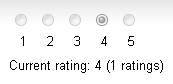
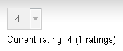

Using the Content rating web part
You can add the Content rating web part to any web part zone on any page of your website, thus enabling users to rate the content of the currently displayed page. The web part has three default appearance modes:
|
Stars |
Radio-buttons |
Drop-down list |
|
|
 |
 |
Web part properties
The table lists specific properties of the web part:
|
Property name |
Description |
|
Rating value |
Sets the displayed rating value explicitly. A value from the <0,1> interval can be used, while 0 represents the lowest rating and 1 represents the highest rating on the scale defined by the Max rating value property. If blank, the system displays the real rating calculated as an average value of particular ratings. |
|
Rating type |
Specifies the appearance of the web part. You can choose from Stars, Radio-buttons or Drop-down list. |
|
Max rating value |
Specifies the size of the rating scale. For example, if 7 is entered, rating is possible on a scale from 1 to 7. |
|
Show results |
If selected, the system displays overall rating results. Otherwise (removed checkmark), users can rate but cannot see the results. |
|
Result message |
Allows you to specify a message showing overall rating results. The {0} macro displays overall rating (for one decimal rounding, you can use {0:0.#} ). The {1} macro displays the total number of votes. |
|
Check permissions |
If selected, the system checks permissions set by the Allow for public and Hide to unauthorized roles properties. |
|
Allow zero value |
If selected, users can submit ratings with zero value (no rating value selected). |
|
Error message |
Allows you to specify a message displayed to users who try to submit a rating with zero value. Applied only if the Allow zero value option is disabled. |
|
Anonymous users can rate |
If selected, rating is allowed to public unauthorized users. Otherwise (removed checkmark), only authenticated users can rate. |
|
Check if user rated |
If selected, users can vote only once. To indicate that the user already voted, the system stores a DocRated cookie in the web browser. The cookie contains NodeIDs of the rated pages, separated by the pipe character (e.g. |4|61|229|230|228|369|). |
|
Hide to unauthorized users |
If selected, the web part is hidden to unauthorized users. |
|
Message after rating |
Allows you to specify a text message displayed after a user submits their rating. Macros that can be used: {0} your rating, {1} overall rating, {2} overall number of votes. |
Example: Adding news ratings
You can place the Content rating web part on any page of your website to enable users to rate the content of this particular page. In the following example, you will add the web part to news items on the sample Corporate site. You can achieve a similar result also with transformations, as described in Displaying content rating in transformations.
Open the Pages application, switch to the Design mode and select News in the content tree.
Add the Content rating web part to the Main zone.
In the web part properties dialog, configure the following property:
Show for page types: cms.news; this ensures that the system displays the web part only for the particular news items, and not for the list of news on the title page of the News section.
Now go to the live site and view the New Consulting Services news item. You can see the web part as in the screenshot below. Try rating the page.
Rating a page
To view the overall rating, open the Pages application and view Properties of the news item. The Rating property on the General tab reflects the current rating of the selected page. Here, all ratings are recalculated to a 10-step scale and displayed as stars, regardless of the current configuration of the web part.